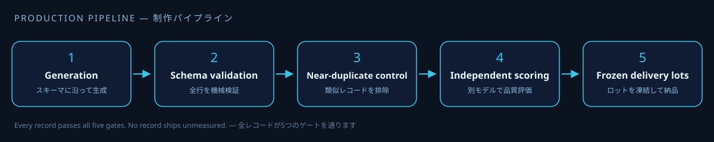

Agent training data
Spring of Winds Labs is a small research lab in Japan, founded in 2026. We build agent training data — and we publish the measurements to prove it.
Proof
Per-lot results: EVALS.md · Details and a verbatim row from a shipped lot: evidence page.
Independent lab based in Japan, operating since 2026. Contact: springofwinds-labs@muse.ai — we read and reply to every inquiry.
Try it in 5 minutes: 1) Get a free 50-row sample on Hugging Face → 2) Run the public validator (validate_jsonl.py) on it → 3) Score your agent's outputs with the free evaluation API.
Score your agent's error-recovery outputs against held-out golden tasks — free.
Our evaluation API returns pass/fail and a failure classification per record; the golden data is never exposed.
Fetching the task list does not consume your scoring quota. Free plan: 100 scoring calls/month, up to 100 records per call. Operational since 2026-11-23.
POST /v1/score request:
{"records": [{"task_id": "T001", "outputs": ["{\"name\": \"list_s3_buckets\", \"arguments\": {}}"]}]}Response:
{"summary": {"total": 1, "schema_valid": 1, "scored": 1, "mean_score": 0.5}, "failure_breakdown": {"rate_limit": 1}, "per_record": [{"index": 0, "schema_valid": true, "score": 0.5, "failure_category": "rate_limit"}]}https://rapidapi.com/%E7%A5%9E%E5%B4%8E%E6%81%B5/api/springofwinds-lab
Measured pilot — $990
See a real pilot report first: pilot-report.html.
You give us your tasks. We measure your model with and without our data, and deliver the report. The price is fixed at $990.
| Metric | What it tells you |
|---|---|
| Recovery success rate | How often the agent recovers after an injected tool failure |
| Schema & validation error rate | How often outputs break the declared tool schema |
| Task completion rate | How often the task is completed end to end |
Pilot credit: 100% of the pilot fee is credited if you license within 60 days of the report; 50% after that.
The base model alone recovered from 1.7% of injected MCP failures. With a LoRA adapter trained on our own corpus, it recovered from 56.7%.
| Metric (60 tasks) | A: base model only | B: base + LoRA |
|---|---|---|
| Recovery success rate | 1/60 = 1.7% | 34/60 = 56.7% |
| Task completion rate | 1/60 = 1.7% | 31/60 = 51.7% |
| Schema / validation error rate | 0/60 = 0.0% | 1/60 = 1.7% |
Qwen/Qwen2.5-1.5B-Instruct, LoRA trained on 2,000 rows from our existing corpus, measured 2026-11-19. Recovery was weakest on rate-limit tasks (3/10 with LoRA), and the LoRA run produced 1 schema error where the base model produced none.Catalogue
Every track ships as Strict JSONL. Prices are for the 1K lot: perpetual, organization-wide licence, no redistribution. Free 50-row samples (Apache-2.0) are on Hugging Face.
$7,300 · 1K lot
Free sample on Hugging Face$6,400 · 1K lot
Free sample on Hugging Face$8,500 · 1K lot
Free sample on Hugging Face$12,500 · 1K lot
Free sample on Hugging Face250 MCP error-recovery trajectories — a strict subset of the MCP 1K lot, same schema, same validation. Instant download.
How it's made
validate_jsonl.py runs on 100% of rows, not a sample.
For procurement
Ways to work with us
Instant download on Gumroad. Look at real rows in your own pipeline.
Fixed price. With/without measurement on your task, delivered as a report.
Direct purchase with Stripe invoicing for the 1K and Extended lots.
Evaluation or custom specification production: write to springofwinds-labs@muse.ai.
About the lab
We are small and new. That is exactly why everything we sell can be checked first: samples, schemas, validation, and a measured pilot on your own task before any licence.
Contact: springofwinds-labs@muse.ai
FAQ
Perpetual, organization-wide use for model training, evaluation and internal tooling.
No. There is no redistribution tier. Free 50-row samples are Apache-2.0.
Founding buyers receive free updates within the same track.
No. We do not sell exclusive licences.
The Starter 250 is for internal evaluation, validation and experimental training, on 250 rows drawn from the MCP Agent Trajectory 1K tier. If you train a production or commercial model, you need the 1K licence — and the $49 you paid for the Starter is credited in full toward it.